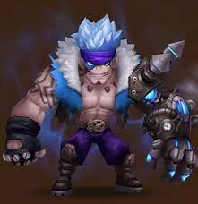
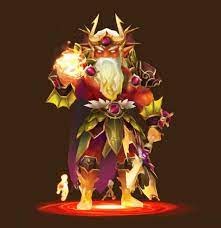
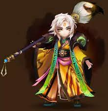

There are a wide variety of monsters in the game, ranging from natural 2 star monsters to natural 5 star monsters. While every monster can be evolved into its final form, a 6 star monster, the naturally higher star monsters have greater base stats and are a little bit stronger. There are 3 main elements, those being wind, water, and fire, and 2 other elements, light and dark. The main elemental monsters are all weak versus one element, strong versus another, and neutral versus their own element. For example, fire monsters are strong against wind monsters, weak against water monsters, and neutral against other fire monsters. In the case of light and dark monsters, they are strong versus each other (light vs dark and dark vs light), and neutral to all the other elements. Let's talk about some of the strongest monsters in the game (you can download each monster by clicking on the download button).
Moore is a relatively new monster in the game. He was introduced during the Street Fighter collaboration event, so some players have him as a water element Ryu. Moore is a water monster, with a speed lead and decent base speed, which makes him go first often when both players have equal rune speeds. Furthermore, even if he is outsped, his passive allows him to steal a turn when he's hit, so the enemy should not attack him even if they go first, or he can take back the initiative. His third skill can strip buffs and push back the enemy's attack bar, making him an ideal initiator of fights since he enables the follow up units to go next and control the enemy team.
Okeanos is a fire monster that has been around for a while and has always been a good monster in world arena. However, with the introduction of artifacts, which are very similar to runes, Okeanos has become even better. More specifically, Okeanos' third skill hits each enemy 4 to 6 times, with each hit having a chance to stun the enemy. This means Okeanos can often stun the entire enemy team, and his third skill essentially grants him another turn if he manages to stun 4 units or more. Before, Okeanos had to built either as a support monster, or as a hybrid support/damage dealer with some damage stats in the runes, but with "additional damage by x% of speed" artifacts, he can now dish out a lot of damage while on tanky support runes. His second skill lets him remove any buffs on the enemy and resets their cooldowns, preventing them from using their stronger skills, which makes Okeanos one of the best control monsters in the game.
Cheonpung is a wind monster that was not used when initially released. However, after his buff, he has become a dominate monster in world arena. His skill 2 removes buffs on all enemies, then applies defense break. This combination of stripping any buffs on the enemy and applying defense break means any sort of follow up attack can land debuffs (the most important ones being stuns and defense breaks) and that the damage dealt to the enemies increases substantially. His third skill pushes back the attack bar of all enemies, and if their attack bar is at 0, it will reset their skill cooldowns so they are unable to use their stronger skills. His kit is one of the most overloaded kits in the game, so if Cheonpung moves several times in a row, as when equipped with violent runes, he can devastate the enemy team.